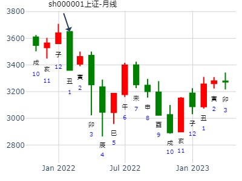
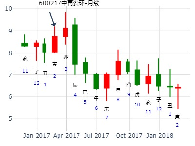
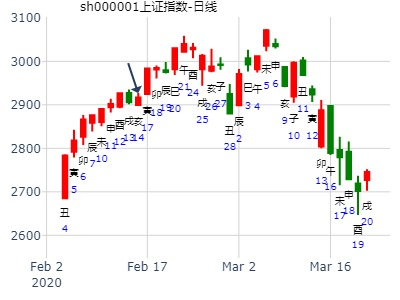
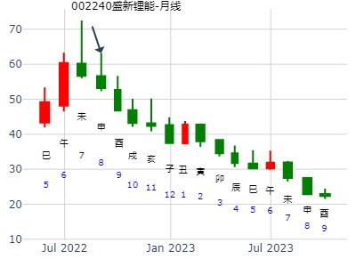
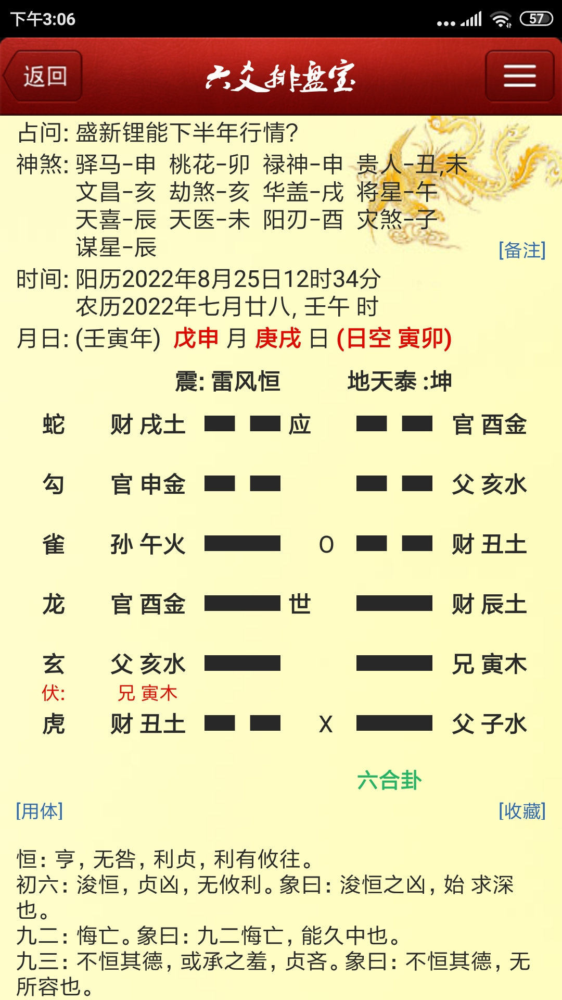
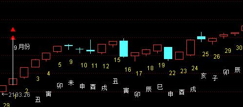
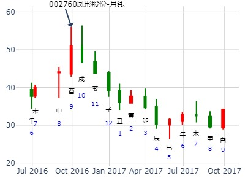
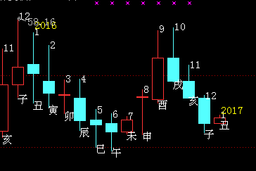
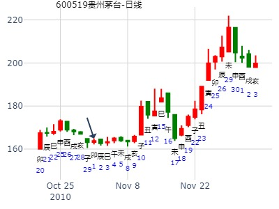

主帖标题: 2022国证2000
辛丑 辛丑 辛巳 丙申 (申酉空) 辛丑年腊月廿五(2022/01/28 15:00:14)
雷风恒 地天泰
腾蛇 妻财戌土 ∥ 应 官鬼酉金 ∥ 应
勾陈 官鬼申金 ∥ 父母癸亥 ∥
朱雀 子孙庚午 ○ 妻财丑土 ∥
青龙 官鬼酉金 ／ 世 妻财辰土 ／ 世
兄弟寅木：玄武 父母亥水 ／ 兄弟甲寅 ／
白虎 妻财丑土 × 父母子水 ／
注:k线卦,动爻据感觉而取,很可能取得不对.没经验,无法给出正确的解渎.各自领悟吧
—爻新辞 挖掘不停,难免出事,没好处,凶.
四爻新辞 田猎无获
数理卦，仅供参考，勿当真。

风生水起：600217中再资环2017年2月14日-2018年2月13日。.md
时间: 2017-02-14 7时58分
干支: 丁酉年壬寅月壬申日甲辰时 (旬空: 戌亥 )
雷风恒 地天泰
六神 伏神 本 卦 变 卦
白虎 ▅▅ ▅▅ 妻财戌土 应 ▅▅ ▅▅ 官鬼酉金 应
腾蛇 ▅▅ ▅▅ 官鬼申金 ▅▅ ▅▅ 父母亥水
勾陈 ▅▅▅▅▅ 子孙午火 Ｏ→ ▅▅ ▅▅ 妻财丑土
朱雀 ▅▅▅▅▅ 官鬼酉金 世 ▅▅▅▅▅ 妻财辰土 世
青龙 兄弟寅木▅▅▅▅▅ 父母亥水 ▅▅▅▅▅ 兄弟寅木
玄武 ▅▅ ▅▅ 妻财丑土 Ｘ→ ▅▅▅▅▅ 父母子水

出生：2020 年 性别：男
占事：2020.2.1星期六甲戌日-2.10星期一癸未哪日底？
公历起卦时间：2020年2月14日17时50分 (电脑自动)
干支：庚子年 戊寅月 丁亥日 己酉时 （日空：午未）
神煞：驿马－巳 桃花－子 日禄－午 贵人－酉，亥
震宫：雷风恒 坤宫：地天泰 (六合)
六神 伏神 本 卦 变 卦
青龙 妻财庚戌土 ▅▅ ▅▅ 应 官鬼癸酉金 ▅▅ ▅▅ 应
玄武 官鬼庚申金 ▅▅ ▅▅ 父母癸亥水 ▅▅ ▅▅
白虎 子孙庚午火 ▅▅▅▅▅ ○→ 妻财癸丑土 ▅▅ ▅▅
螣蛇 官鬼辛酉金 ▅▅▅▅▅ 世 妻财甲辰土 ▅▅▅▅▅ 世
勾陈 兄弟庚寅木 父母辛亥水 ▅▅▅▅▅ 兄弟甲寅木 ▅▅▅▅▅
朱雀 妻财辛丑土 ▅▅ ▅▅ ╳→ 父母甲子水 ▅▅▅▅▅

盛新锂能下半年行情
时间: 2022-08-25 12时34分
干支: 壬寅年戊申月庚戌日 (旬空: 寅卯 )
雷风恒 地天泰
六神 伏神 本 卦 变 卦
腾蛇 ▅▅ ▅▅ 妻财戌土 应 ▅▅ ▅▅ 官鬼酉金 应
勾陈 ▅▅ ▅▅ 官鬼申金 ▅▅ ▅▅ 父母亥水
朱雀 ▅▅▅▅▅ 子孙午火 Ｏ→ ▅▅ ▅▅ 妻财丑土
青龙 ▅▅▅▅▅ 官鬼酉金 世 ▅▅▅▅▅ 妻财辰土 世
玄武 兄弟寅木▅▅▅▅▅ 父母亥水 ▅▅▅▅▅ 兄弟寅木
白虎 ▅▅ ▅▅ 妻财丑土 Ｘ→ ▅▅▅▅▅ 父母子水


恒之泰，财化父&子化财。占9月25日上证走势。.md
时间: 2014-09-25 7时16分 卦主：悟道喜悦
干支: 甲午年癸酉月己亥日 (旬空: 辰巳 )
雷风恒 地天泰
六神 伏神 本 卦 变 卦
勾陈 ▅▅ ▅▅ 妻财戌土 应 ▅▅ ▅▅ 官鬼酉金 应
朱雀 ▅▅ ▅▅ 官鬼申金 ▅▅ ▅▅ 父母亥水
青龙 ▅▅▅▅▅ 子孙午火 Ｏ→ ▅▅ ▅▅ 妻财丑土
玄武 ▅▅▅▅▅ 官鬼酉金 世 ▅▅▅▅▅ 妻财辰土 世
白虎 兄弟寅木▅▅▅▅▅ 父母亥水 ▅▅▅▅▅ 兄弟寅木
腾蛇 ▅▅ ▅▅ 妻财丑土 Ｘ→ ▅▅▅▅▅ 父母子水
占事：925上证走势 悟道喜悦
2014年9月25日7时16分 甲午年癸酉月己亥日戊辰时 (辰巳)
震宫：雷风恒 坤宫：地天泰（六合）
六神 伏 神 【本 卦】 【变 卦】
勾陈 ▄▄ ▄▄ 妻财庚戌土 应 ▄▄ ▄▄ 官鬼癸酉金 应
朱雀 ▄▄ ▄▄ 官鬼庚申金 ▄▄ ▄▄ 父母癸亥水
青龙 ▄▄▄▄▄ 子孙庚午火 O-> ▄▄ ▄▄ 妻财癸丑土
玄武 ▄▄▄▄▄ 官鬼辛酉金 世 ▄▄▄▄▄ 妻财甲辰土 世
白虎 兄弟庚寅木 ▄▄▄▄▄ 父母辛亥水 ▄▄▄▄▄ 兄弟甲寅木
螣蛇 ▄▄ ▄▄ 妻财辛丑土 X-> ▄▄▄▄▄ 父母甲子水

占事：凤形股份2016.9.12-2017.2.6走势 999tong 起卦方式：手工指定
公历时间：2016年9月9日19时39分
干 支：丙申年 丁酉月 甲午日 甲戌时
旬 空：辰巳 辰巳 (辰巳) 申酉
震宫：雷风恒 坤宫：地天泰（六合）
六神 伏 神 【本 卦】 【变 卦】
玄武 ▄▄ ▄▄ 妻财庚戌土 应 ▄▄ ▄▄ 官鬼癸酉金 应
白虎 ▄▄ ▄▄ 官鬼庚申金 ▄▄ ▄▄ 父母癸亥水
螣蛇 ▄▄▄▄▄ 子孙庚午火 O-> ▄▄ ▄▄ 妻财癸丑土
勾陈 ▄▄▄▄▄ 官鬼辛酉金 世 ▄▄▄▄▄ 妻财甲辰土 世
朱雀 兄弟庚寅木 ▄▄▄▄▄ 父母辛亥水 ▄▄▄▄▄ 兄弟甲寅木
青龙 ▄▄ ▄▄ 妻财辛丑土 X-> ▄▄▄▄▄ 父母甲子水


标题: 茅台第四季的业绩能达1.60元吗？
占事: 600519 起卦方式：手工指定
公历时间：2010年10月30日9时43分
干支：庚寅年 丙戌月 癸丑日 丁巳时
旬空：午未 午未 寅卯 子丑
神煞：驿马─亥 桃花─午 日禄─子 贵人─巳，卯
震宫：雷风恒 坤宫：地天泰（六合）
六神 伏 神 【本 卦】 【变 卦】
白虎 ▄▄ ▄▄ 妻财庚戌土 应 ▄▄ ▄▄ 官鬼癸酉金 应
螣蛇 ▄▄ ▄▄ 官鬼庚申金 ▄▄ ▄▄ 父母癸亥水
勾陈 ▄▄▄▄▄ 子孙庚午火 O-> ▄▄ ▄▄ 妻财癸丑土
朱雀 ▄▄▄▄▄ 官鬼辛酉金 世 ▄▄▄▄▄ 妻财甲辰土 世
青龙 兄弟庚寅木 ▄▄▄▄▄ 父母辛亥水 ▄▄▄▄▄ 兄弟甲寅木
玄武 ▄▄ ▄▄ 妻财辛丑土 X-> ▄▄▄▄▄ 父母甲子水
